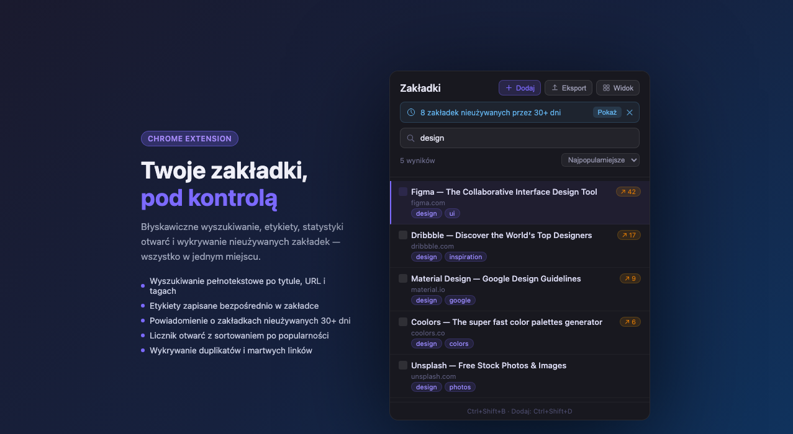
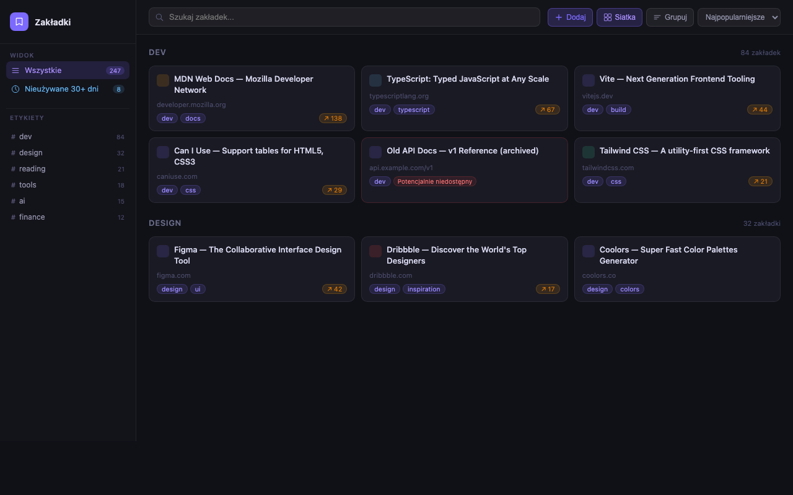

Search, tag, and manage your Chrome bookmarks in seconds — with duplicate detection, stale-link alerts, and optional AI tag suggestions. No account, no cloud, no ads.
Add to Chrome

Searches title, URL, and tags simultaneously — including mid-word matches. Results update as you type.
Tags live inside the bookmark title (Title | tag1, tag2), so they sync across all your devices via your Google account automatically.
Bookmarks you haven't opened in 30+ days are flagged. Review and clean up with one click.
Automatically finds duplicate URLs, stripping tracking parameters (UTM, fbclid) and anchors before comparing.
Every click is counted. Sort by most-opened to surface your most-used bookmarks at the top.
Export all bookmarks (title, URL, tags) as a UTF-8 CSV compatible with Excel and Google Sheets. Import works the same way.
Sends HTTP HEAD requests to verify bookmarks are still reachable. Flags potentially broken links without loading any page content.
Bring your own OpenAI API key and get instant tag suggestions from GPT-4o mini. Disabled by default, no data leaves your device without it.
Last updated: April 2026 · Applies to version 1.0.0 and later
chrome.storage.local. No personal data is collected, transmitted, or shared
with any third party — except when you explicitly enable the optional AI feature and provide
your own OpenAI API key.
All data is stored exclusively in your browser's local storage and never leaves your device unless noted below.
| Key | Contents | Purpose |
|---|---|---|
| bm_settings | Feature flags, optional OpenAI API key | Persist user preferences |
| bm_stats | Open count and last-opened timestamp per bookmark ID | Popularity sort, stale detection |
| bm_history | Last 30 add/edit/delete operations | Undo support |
| bm_view_prefs | Grid mode, group mode, sort order | Restore view between sessions |
| bm_installed_at | First-install timestamp | Baseline for stale detection |
| bm_pending_add | Title + URL of bookmark being added | Pass data from background to popup (cleared immediately) |
| Permission | Why it's needed |
|---|---|
| bookmarks | Read, create, edit, and delete Chrome bookmarks |
| storage | Save preferences and statistics locally |
| tabs | Read the active tab URL/title when saving via Ctrl+Shift+D |
| <all_urls> | Send HTTP HEAD requests for dead-link checking (optional, user-triggered). Only the HTTP status code is read — no page content. |
The AI tag suggestion feature is disabled by default and requires you to
explicitly enable it and provide your own OpenAI API key. When active, only the bookmark's
title and URL are sent to api.openai.com. Your API key is stored locally and
never transmitted to anyone other than OpenAI.
OpenAI's privacy policy applies to that interaction.
We do not collect, sell, rent, or share any of your data. No analytics, crash reporting, or telemetry of any kind.
Go to chrome://extensions, find Bookmarks Manager and click Remove to delete all stored data. You can also clear individual storage keys from the extension's Settings panel.
Questions? Open an issue on GitHub.